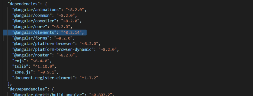
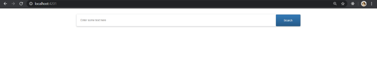

<div class="content-overview">
    <div class="inner-style">
        <h2 class="content-heading"><span class="style-scope ">6</span>. <span
                class="style-scope google-codelab-step">Create custom element with Angular elements</span></h2>
        <p>To start with this, the first step would be to install the package @angular/elements .</p>
        <h3 style="text-align: center; color: gray;">ng add @angular/elements
        </h3>
        <div style="text-align: center; "></div> <br><br>
        <div class="content-tag"><code class="icon-code-style">npm install --save @webcomponents/custom-elements</code>
        </div>
        <pre style="background: darkgray; padding: 6px;"><code style=" color: black;">import ‘@webcomponents/custom-elements/src/native-shim’;
import ‘@webcomponents/custom-elements/custom-elements.min’;</code></pre>

        <p>The installation of @angular/elements also adds polyfills which are lighter in size but the support for some
            browsers is quite limited. Therefore, these two above-mentioned polyfills come to be of best use.</p>
        <p>The next step is to create a traditional Angular component (to be used as a web component) which looks like
            this:</p>
        <pre style="background: darkgray; padding: 6px;"><code style=" color: black;">@Component({{'{'}}
    templateUrl: './custom-elements.component.html',
    styleUrls: ['./custom-elements.component.scss']
{{'}'}})
export class ComponentName {{'{'}}
    title = 'custom-elements-demo';
{{'}'}}</code></pre>
        <p>The selector name will be the one used while creating the web-component. Also, you would want to give it a
            generic name as this web component is going to be a re-usable one which you'd definitely want to use in your
            other projects as well.
            The next step then is to create the custom Element inside the module of your app. To do this, we first need
            to declare it inside the entryComponents array inside NgModule.</p>

        <h3 style="text-align: center; color: gray;">Note: Starting Angular v9, this would not be required as with Ivy,
            we do not need to explicitly specify a component as an entryComponent.</h3>
        <p>Inside the module class, define the custom element component now as:
        </p>
        <pre style="background: darkgray; padding: 6px;"><code style=" color: black;">//Inside NgModule  
  
  entryComponents: [CustomElementDemoComponent],

  {{'}'}})
  
export class FeatureModule   {{'{'}}
  constructor(private injector: Injector)   {{'{'}}
  {{'}'}}

  ngDoBootstrap()   {{'{'}}
      const customElement = createCustomElement(CustomElementDemoComponent, 
      {{'{'}} injector: this.injector   {{'}'}});
      customElements.define('custom-element', customElement);
  {{'}'}}
{{'}'}}</code></pre>
        <p>Inside the module, We use the injector service to basically wrap this Angular component as a web component
            using the createCustomElement method from Angular Elements. customElements.define registers this component
            on to the browser. This is done inside the ngDoBootstrap method as you want to manually bootstrap the
            component instead of asking Angular to do it using the bootstrap array.</p>
        <h3 style="text-align: center; color: gray;">&lt;custom-element&gt;&lt;/custom-element&gt;
        </h3>
        <p>Once this is done, you can use it on an Angular component’s template as above and to make sure that the
            Angular component recognizes this custom Element, we add CUSTOM_ELEMENTS_SCHEMA in the schemas array in
            NgModule inside AppModule.</p>
        <p> You custom Element is now ready to be used and is accessible inside any of your Angular projects.</p>
        <div style="text-align: center; "></div>
    </div>
</div>